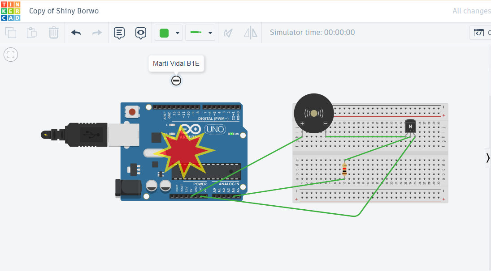
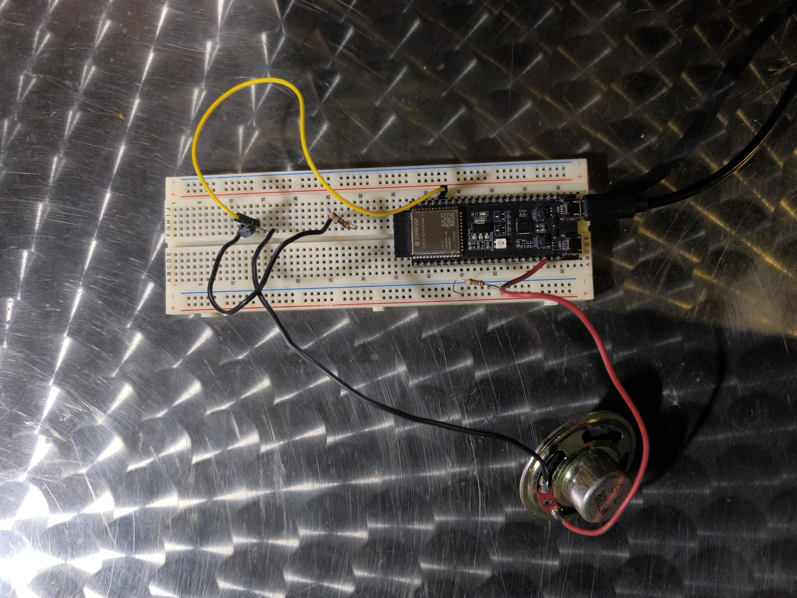

<!DOCTYPE html>
<html lang="en">

<head>
  <meta charset="UTF-8">
  <meta name="viewport" content="width=device-width, initial-scale=1.0">
  <script type="text/javascript" async
    src="https://cdnjs.cloudflare.com/ajax/libs/mathjax/3.2.0/es5/tex-mml-chtml.js"></script>
  <link href="https://fonts.googleapis.com/css2?family=Outfit:wght@400;600;700&display=swap" rel="stylesheet">
  <link rel="stylesheet" href="https://cdn.jsdelivr.net/npm/bootstrap@5.3.3/dist/css/bootstrap.min.css">
  <link rel="stylesheet" href="https://cdnjs.cloudflare.com/ajax/libs/highlight.js/11.11.1/styles/default.min.css">
  <script src="https://cdnjs.cloudflare.com/ajax/libs/highlight.js/11.11.1/highlight.min.js"></script>
  <script src="https://cdnjs.cloudflare.com/ajax/libs/font-awesome/6.7.2/js/all.min.js"></script>
  <script src="https://mvidal401.github.io/robotica/arduino/programacio/arduino.min.js"></script>

  <script>hljs.highlightAll();</script>
  <title>Projecte Arduino</title>
<style>
  body {
font-family: 'Outfit', sans-serif;
    background-color: #f8fafc;
    color: #1e293b;
    margin: 0;
    padding: 0;
  }

  .navbar {
    position: fixed;
    top: 0;
    left: 0;
    width: 100%;
    background-color: #374151;
    padding: 16px 32px;
    color: white;
    font-weight: bold;
    display: flex;
    justify-content: space-between;
    align-items: center;
    box-shadow: 0 2px 4px rgba(0,0,0,0.1);
  }

  .navbar-brand {
    font-size: 1.5rem;
    text-decoration: none;
    color: white;
  }

  .nav-link {
    color: white;
    margin-left: 20px;
    text-decoration: none;
    transition: opacity 0.2s;
  }

  .nav-link:hover {
    opacity: 0.8;
  }

  .content-container {
    margin: 100px auto 40px auto;
    padding: 30px;
    max-width: 800px;
    background-color: white;
    border: 1px solid #cbd5e1;
    border-radius: 10px;
    box-shadow: 0 4px 10px rgba(0,0,0,0.05);
  }

  h1 {
    font-size: 2rem;
    text-align: center;
    margin-bottom: 20px;
    color: #374151;
  }

  .custom-button {
    background-color: #374151;
    color: white;
    border: none;
    padding: 12px 24px;
    font-size: 1rem;
    cursor: pointer;
    border-radius: 10px;
    display: inline-flex;
    align-items: center;
    gap: 8px;
    transition: background-color 0.2s ease;
  }

  .custom-button:hover {
    background-color: #1f2937;
  }

  .custom-button i {
    font-size: 1.2rem;
  }

  table {
    width: 100%;
    border-collapse: collapse;
    margin: 20px auto;
    background-color: #f1f5f9;
    border-radius: 10px;
    overflow: hidden;
  }

  th, td {
    border: 1px solid #cbd5e1;
    padding: 12px;
    text-align: center;
  }

  thead {
    background-color: #374151;
    color: white;
  }

  tbody tr:nth-child(even) {
    background-color: #e2e8f0;
  }

  tbody tr:hover {
    background-color: #cbd5e1;
  }

  pre, code {
    background-color: #0f0f0f;
    color: #f8fafc;
    padding: 12px;
    border-radius: 10px;
    display: block;
    overflow-x: auto;
    font-family: monospace;
    font-size: 0.95rem;
    margin: 20px 0;
  }
</style>


    <script>
        function copyCode(button) {
            const codeBlock = button.nextElementSibling.innerText;
            navigator.clipboard.writeText(codeBlock).then(() => {
                button.innerHTML = '<i class="fas fa-check"></i>';
                setTimeout(() => { button.innerHTML = '<i class="fas fa-copy"></i>'; }, 2000);
            });
        }
    </script>
</head>

<body>
    <!-- Navbar -->
    <nav class="navbar navbar-expand-lg">
        <div class="container-fluid">
            <a class="navbar-brand" href="https://mvidal401.github.io">
                
                Web de Martí V.
            </a>
            <button class="navbar-toggler" type="button" data-bs-toggle="collapse" data-bs-target="#navbarNav"
                aria-controls="navbarNav" aria-expanded="false" aria-label="Toggle navigation">
                <span class="navbar-toggler-icon"></span>
            </button>
            <div class="collapse navbar-collapse" id="navbarNav">
                <ul.n class="navbar-nav ms-auto">
                    <li class="nav-item">
                        <a class="nav-link" href="https://mvidal401.github.io">Inici</a>
                    </li>
                    <li class="nav-item dropdown">
                        <a class="nav-link dropdown-toggle" href="#" id="navbarDropdown" role="button"
                            data-bs-toggle="dropdown" aria-haspopup="true" aria-expanded="false">
                            Programació
                        </a>
                        <div class="dropdown-menu" aria-labelledby="navbarDropdown">
                            <a class="dropdown-item" href="#">Cara interactiva</a>
                            <a class="dropdown-item" href="#">Cara interactiva nova</a>
                            <a class="dropdown-item" href="#">Ocell</a>
                            <a class="dropdown-item" href="#">Coldplay</a>
                            <a class="dropdown-item" href="#">Astronomia</a>
                            <a class="dropdown-item" href="#">Astronomia</a>
                            <a class="dropdown-item" href="#">Openair</a>
                        </div>
                    </li>
                    <li class="nav-item dropdown">
                        <a class="nav-link dropdown-toggle" href="#" id="navbarDropdown2" role="button"
                            data-bs-toggle="dropdown" aria-haspopup="true" aria-expanded="false">
                            Robòtica
                        </a>
                        <div class="dropdown-menu" aria-labelledby="navbarDropdown2">
                        <a class="dropdown-item" href="https://mvidal401.github.io/coldplay/">Projecte Coldplay</a>
                        <a class="dropdown-item" href="#">Python</a>
                        <a class="dropdown-item" href="#">Cinemàtica directa</a>
                        <a class="dropdown-item" href="#">Cinemàtica indirecta</a>

                        </div>
                    </li>
                    <li class="nav-item">
                    </li>
                </ul.n>
            </div>
        </div>
    </nav>
  
 <div class="content-container">
        <h1>El meu projecte Arduino</h1>
   <p>Aquest projecte constava de crear un projecte amb codi junt amb una placa d'Arduino, i aquí us comentaré el que he anat fent a les classes</p>
<p>Primer de tot el professor ens va donar les plaques a cadascú i vam aprendre com reproduir sons de notes amb un speaker. Jo el que vaig pensar a fer 
va ser buscar una cançó i vaig decantar-me per la melodia de un videojoc anomenat "Mario Bros". Tot seguit vaig primer fer el codi i vaig construir 
la placa en Tinkercad per veure si funcionava.</p>
        
<h3>Codi en Tinkercad i disseny de la placa:</h3>

   
<pre><code>
// Codi cançó  
#define SPEAKER_PIN A4  

#define NOTE_E3  165
#define NOTE_G3  196
#define NOTE_A3  220
#define NOTE_AS3 233
#define NOTE_B3  247

#define NOTE_C4  262
#define NOTE_D4  294
#define NOTE_E4  330
#define NOTE_F4  349
#define NOTE_G4  392
#define NOTE_A4  440
#define NOTE_B4  494
#define NOTE_C5  523

int melody[] = {
  NOTE_E4, NOTE_E4, NOTE_E4,
  NOTE_C4, NOTE_E4, NOTE_G4,
  NOTE_G3, NOTE_C4, NOTE_G3,
  NOTE_E3, NOTE_A3, NOTE_B3, NOTE_AS3, NOTE_A3,
  NOTE_G3, NOTE_E4, NOTE_G4,
  NOTE_A4, NOTE_F4, NOTE_G4,
  0, NOTE_E4, NOTE_C4, NOTE_D4, NOTE_B3
};

int durations[] = {
  125, 125, 250,
  250, 250, 250,
  500, 250, 500,
  500, 250, 250, 250, 250,
  500, 125, 125,
  250, 250, 250,
  250, 250, 250, 250, 500
};

void setup() {
  for (int i = 0; i < sizeof(melody) / sizeof(int); i++) {
    int noteDuration = durations[i];
    if (melody[i] != 0) {
      tone(SPEAKER_PIN, melody[i], noteDuration);
    }
    delay(noteDuration * 1.3);
    noTone(SPEAKER_PIN);
  }
}

void loop() {
}

</code></pre>
<h3>Errors Tinkercad</h3>
<p>Al estar dissenyant el circuit a Tinkercad vaig tenir un problema on al executar el codi la placa sortia que explotava</p>

<p>El problema que hi havia era que la resistència estava mal colocada i ho vaig poder solucionar canviant la resistència de lloc, com està a 
la primera foto.</p>

<h3>Arduino IDE</h3>   
   <p>Al tenir el codi i la placa funcionant a Tinkercad, era hora de passar-ho a la realitat. El professor ens va donar les plaques a cada un
   i jo vaig començar recreant el circuit que havia fet prèviament a Tinkercad. Quan el vaig tenir muntat, vaig introduir el codi a Arduino IDE.
   Però aquí comencen els problemes.</p>

<h3>Errors Arduino IDE</h3>
   <h4>1. No em detectava la placa</h4>
   <p>Al voler pujar el codi per poder fer que funcioni la placa no era reconeguda. Aquest ha sigut l'error més fàcil de solucionar,
   ja que simplement era anar provant plaques fins que funcionés</p>
   <h4>2. exit status, l'error més díficil</h4>
   <p>Al voler verificar el codi per després pujar-lo (upload), sortia un error on hi apareixia aquest missatge:
avr   1.8.6   /home/tcad/.arduino15/packages/arduino/hardware/avr/1.8.6
 exit status 1.

Jo no entenia el que significava aquest error, i vaig haver de consultar tant al professor com a Internet. Ell em va dir que intentés
   trobar la solució per internet. Vaig utilitzar tant Google, on vaig trobar un foro on parlaven d'aquest error, i ChatGPT. I els
   dos em donaven la mateixa solució, instal·lar una versió antiga del programa, concretament la versió 1.8.19 d'Arduino IDE.
   Al fer-ho, no em va funcionar tampoc o sigui que vaig abandonar aquesta alternativa. Vaig comentar al professor que no havia trobat cap
   solució i em va fer provar una altra cosa, Platformio.</p>

   <h3>Platformio</h3>
   <p>Platformio és una extensió de Visual Studio Code que també serveix per programar Arduino. L'has d'instal·lar des del menú 
   Extensions. Al tenir-la descarregada, l'obrim. Ens apareixerà un arxiu anomenat "platformio.ini". Aquí he colocat aquest codi:</p>
   <pre><code>[env:esp32-s3]
platform = espressif32
board = esp32-s3-devkitc-1
framework = arduino
monitor_speed = 115200
upload_speed = 921600
build_flags = 
  -DARDUINO_USB_CDC_ON_BOOT=1
  -DARDUINO_USB_MODE=1
</code></pre>
<p>Després he creat un arxiu anomenat "main.cpp" on he col·locat el codi que tenia al Arduino IDE però una mica modificat:</p>
   <pre><code>#include <Arduino.h>

#define BUZZER_PIN 2  /
#define CHANNEL 0

#define NOTE_B3  247
#define NOTE_C4  262
#define NOTE_D4  294
#define NOTE_E4  330
#define NOTE_F4  349
#define NOTE_G4  392
#define NOTE_A4  440
#define NOTE_B4  494
#define NOTE_C5  523
#define NOTE_D5  587
#define NOTE_E5  659
#define NOTE_F5  698
#define NOTE_G5  784
#define NOTE_A5  880

void playNote(int note, int duration) {
  if (note == 0) {
    ledcWriteTone(CHANNEL, 0);  
  } else {
    ledcWriteTone(CHANNEL, note);
  }
  delay(duration);
  ledcWriteTone(CHANNEL, 0);
  delay(50);
}

void setup() {
  ledcSetup(CHANNEL, 5000, 8);
  ledcAttachPin(BUZZER_PIN, CHANNEL);

  playNote(NOTE_G4, 250);
  playNote(NOTE_E4, 250);
  playNote(NOTE_F4, 250);
  playNote(NOTE_G4, 250);
  playNote(NOTE_G4, 250);
  playNote(NOTE_G4, 250);
  playNote(NOTE_E4, 250);
  playNote(NOTE_G4, 250);
  playNote(NOTE_B4, 500);

  playNote(NOTE_B3, 250);
  playNote(NOTE_D4, 250);
  playNote(NOTE_E4, 250);
  playNote(NOTE_E4, 250);
  playNote(NOTE_E4, 250);
  playNote(NOTE_G4, 250);
  playNote(NOTE_E4, 250);
  playNote(NOTE_E4, 250);
  playNote(NOTE_D4, 500);
}

void loop() {
}
</code></pre>

<h3>La meva idea</h3>
   <p>El que tenia jo en ment de voler crear després de qu em funcionés aquest codi de música era crear un semàfor amb un sensor de moviment
   que detectés si algú passa quan el semàfor està vermell i soni. Encara que no he pogut realitzar-ho perquè no em funciona res.</p>
<h3>Resultats i conclusions</h3>
   <p>Finalment no he aconseguit fer que funcioni el que havia construit, perquè al fer upload funciona però no sona la música, llavors no
   he sapigut arreglar això. En conclusió, jo i més companys hem tingut molts errors amb aquests plaques llavors no sé si ja es casualitat
   o és que aquestes plaques tenen masses problemes. A part, quan vam fer un altre projecte amb la mateixa placa al primer trimestre
   tampoc em funcionava la placa, o sigui que aquesta ja era la segona vegada que em passa. Aquí està la foto del meu treball final:</p>
   

   
